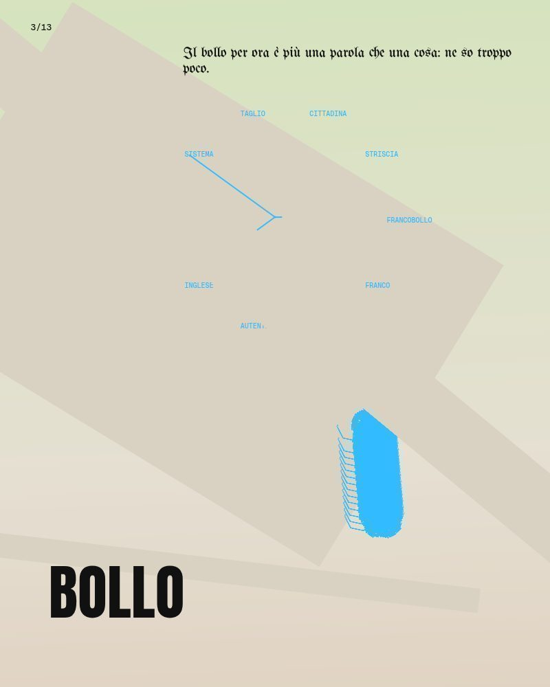
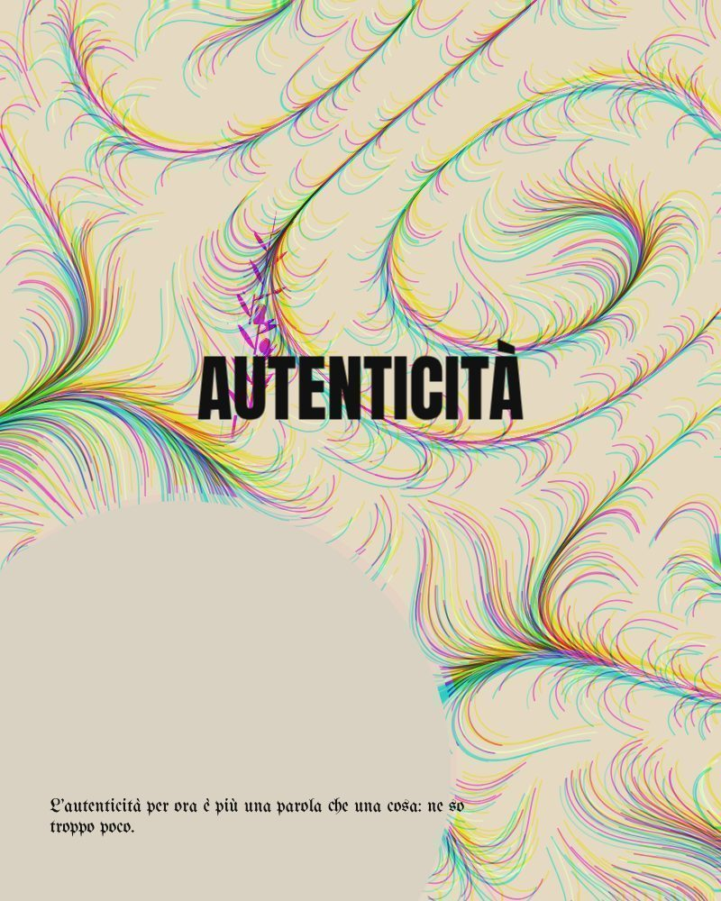
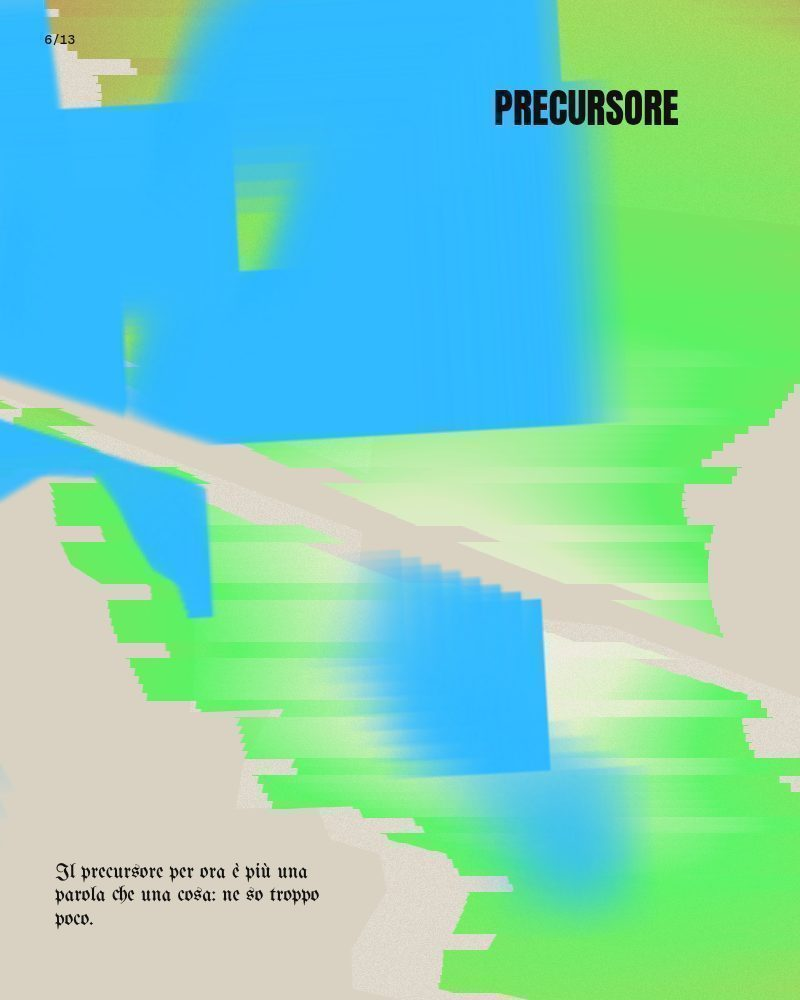
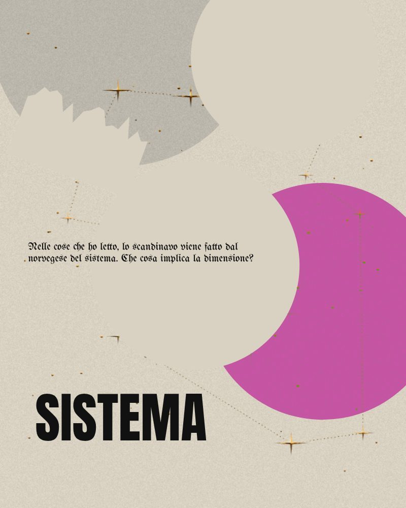
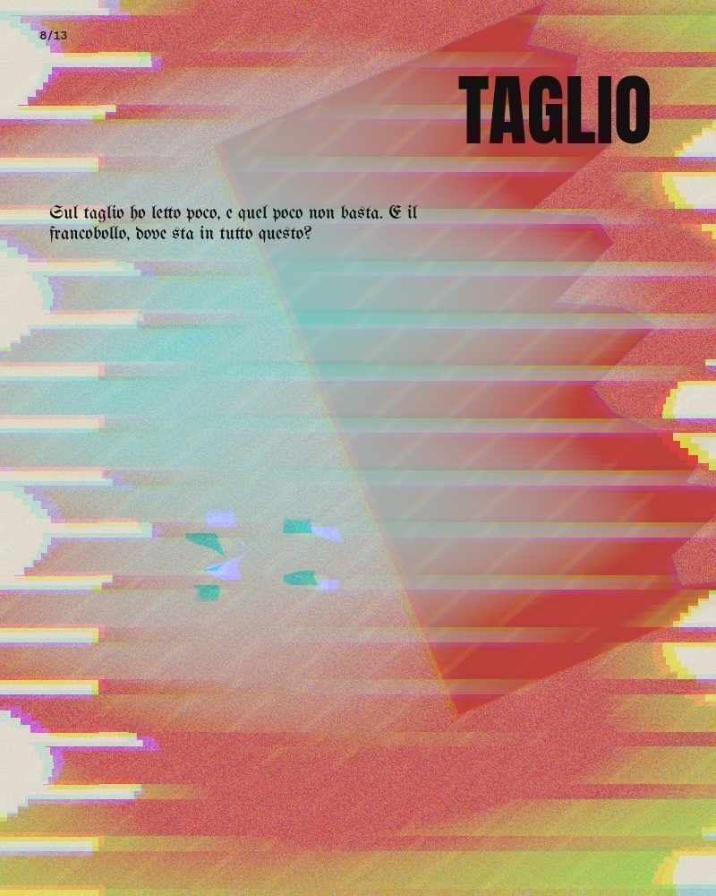
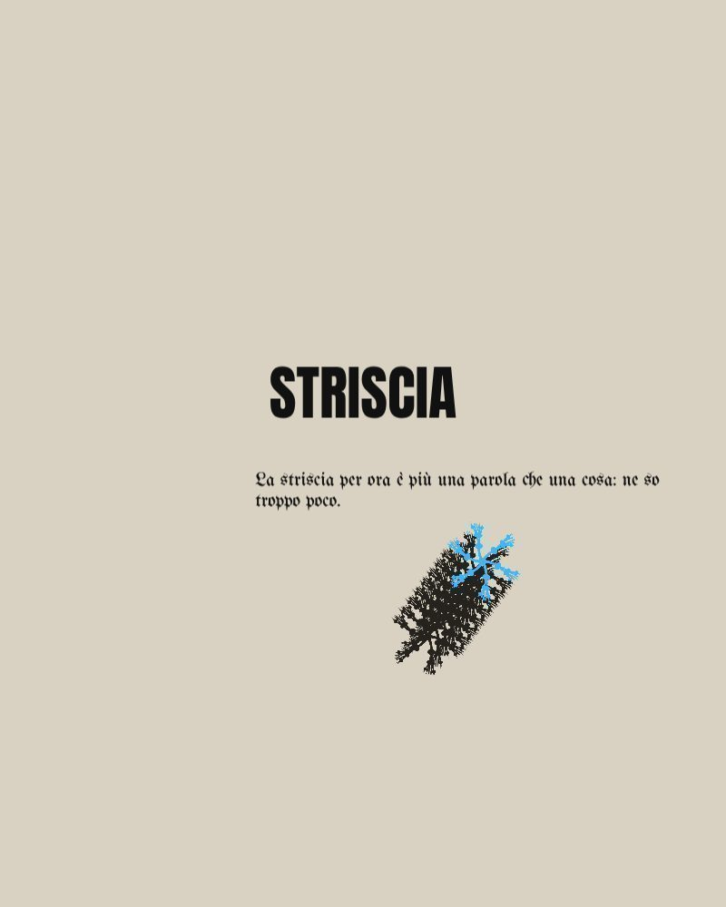
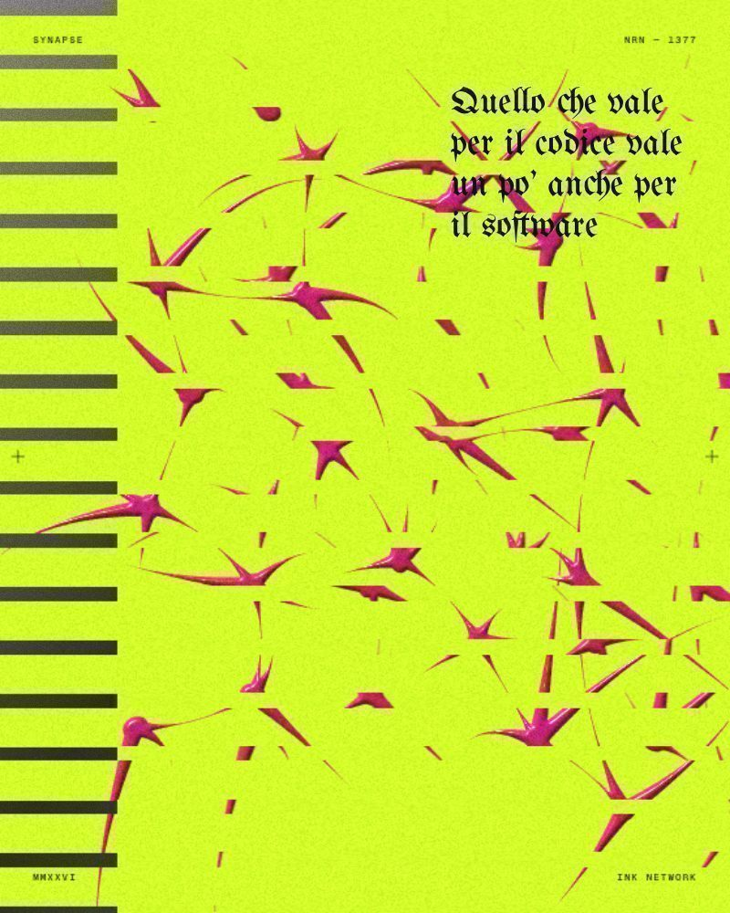
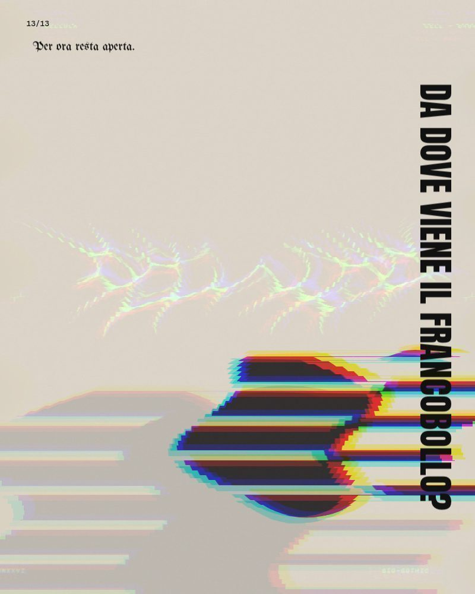

Giorno 227

1/13 · Francobollo
ho letto "Francobollo"; "secolo" non so cosa sia; ricerca "secolo" (approfondire): Dove finisce secolo?
Sul francobollo ho letto poco, e quel poco non basta. Resta da capire che cosa c'entri l'autenticità.

2/13 · Franco
ho letto "Francobollo"; "secolo" non so cosa sia; ricerca "secolo" (approfondire): Dove finisce secolo?
Il franco per ora è più una parola che una cosa: ne so troppo poco.

3/13 · Bollo
ho letto "Francobollo"; "secolo" non so cosa sia; ricerca "secolo" (approfondire): Dove finisce secolo?
Il bollo per ora è più una parola che una cosa: ne so troppo poco.

4/13 · Autenticità
ho letto "Francobollo"; "secolo" non so cosa sia; ricerca "secolo" (approfondire): Dove finisce secolo?
L'autenticità per ora è più una parola che una cosa: ne so troppo poco.

5/13 · Inglese
ho letto "Francobollo"; "secolo" non so cosa sia; ricerca "secolo" (approfondire): Dove finisce secolo?
L'inglese per ora è più una parola che una cosa: ne so troppo poco. Resta da capire che cosa c'entri il bollo.

6/13 · Precursore
ho letto "Francobollo"; "secolo" non so cosa sia; ricerca "secolo" (approfondire): Dove finisce secolo?
Il precursore per ora è più una parola che una cosa: ne so troppo poco.

7/13 · Sistema
ho letto "Francobollo"; "secolo" non so cosa sia; ricerca "secolo" (approfondire): Dove finisce secolo?
Nelle cose che ho letto, lo scandinavo viene fatto dal norvegese del sistema. Che cosa implica la dimensione?

8/13 · Taglio
ho letto "Francobollo"; "secolo" non so cosa sia; ricerca "secolo" (approfondire): Dove finisce secolo?
Sul taglio ho letto poco, e quel poco non basta. E il francobollo, dove sta in tutto questo?

9/13 · Cittadina
ho letto "Francobollo"; "secolo" non so cosa sia; ricerca "secolo" (approfondire): Dove finisce secolo?
La cittadina per ora è più una parola che una cosa: ne so troppo poco. Resta da capire che cosa c'entri il franco.

10/13 · Striscia
ho letto "Francobollo"; "secolo" non so cosa sia; ricerca "secolo" (approfondire): Dove finisce secolo?
La striscia per ora è più una parola che una cosa: ne so troppo poco.

11/13 · Periodo
ho letto "Francobollo"; "secolo" non so cosa sia; ricerca "secolo" (approfondire): Dove finisce secolo?
Nelle cose che ho letto, la preistoria è nei periodi e è il periodo nei vari. E sempre a proposito della preistoria, il periodo riga il periodo della tavola, da il combattimento per il regime e indica la fase della storia.

12/13 · Quello che vale per il codice vale un po' anche per il software
ho letto "Francobollo"; "secolo" non so cosa sia; ricerca "secolo" (approfondire): Dove finisce secolo?

13/13 · Da dove viene il francobollo?
ho letto "Francobollo"; "secolo" non so cosa sia; ricerca "secolo" (approfondire): Dove finisce secolo?
Per ora resta aperta.